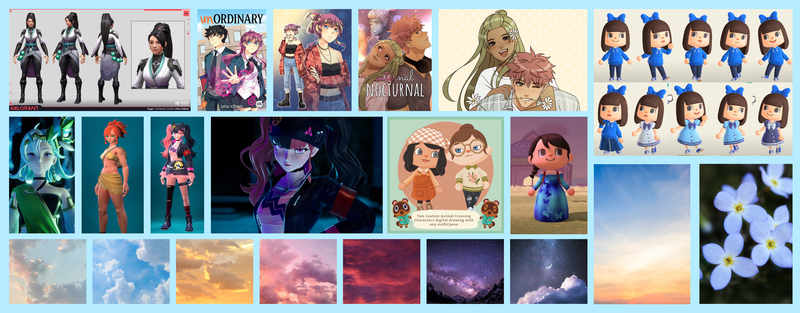
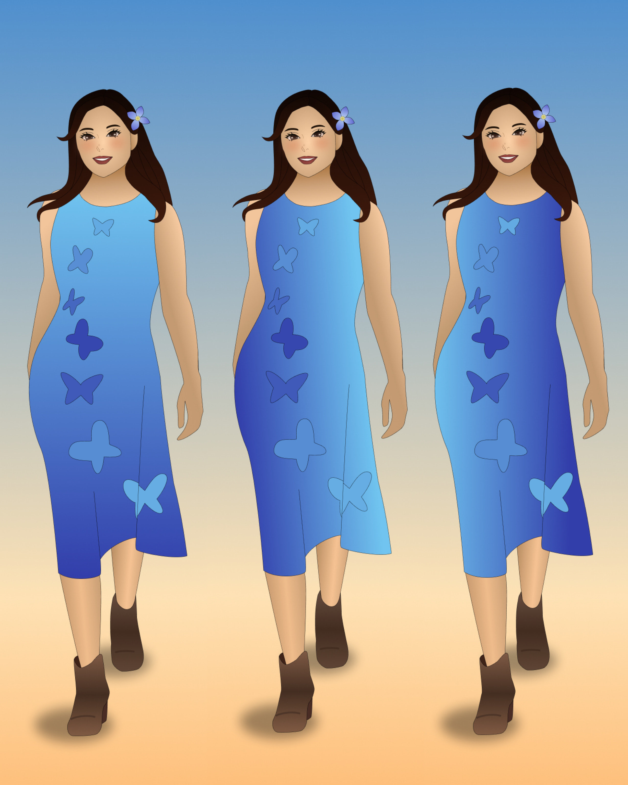
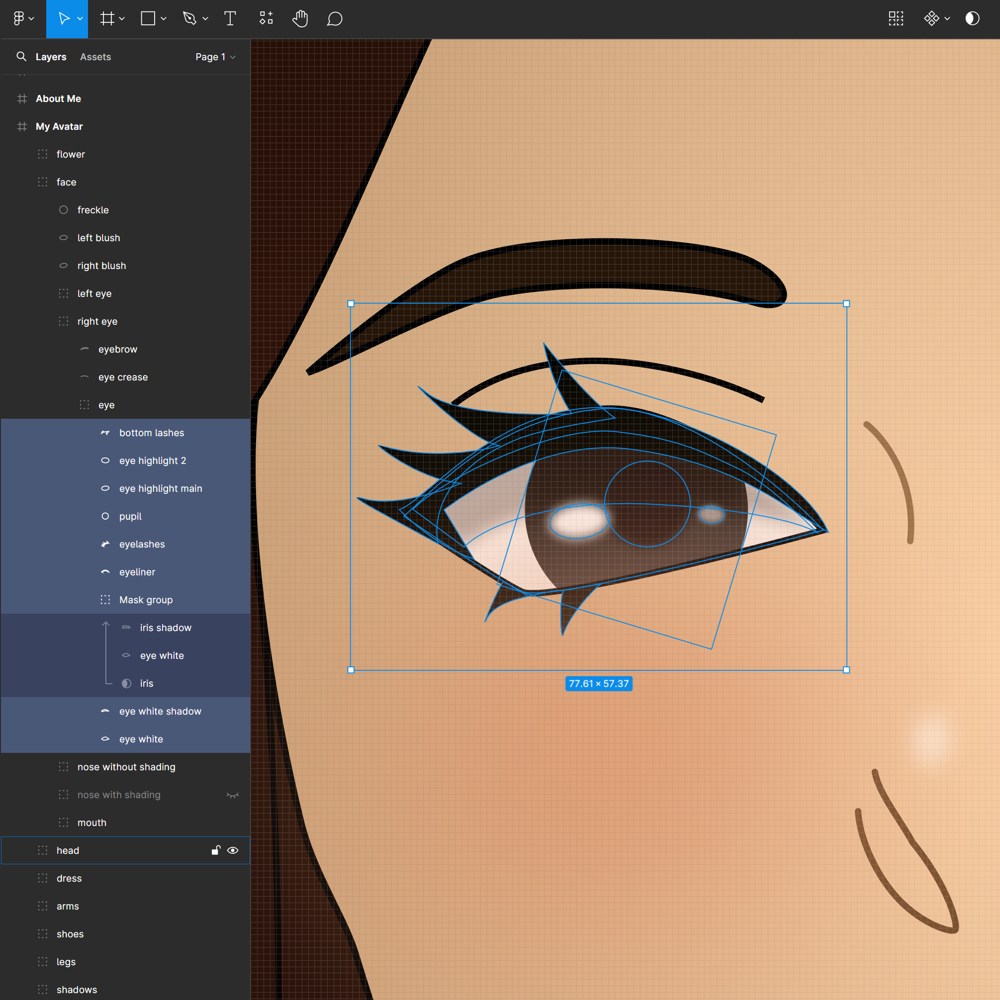
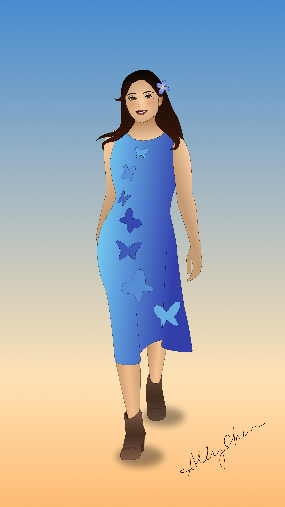
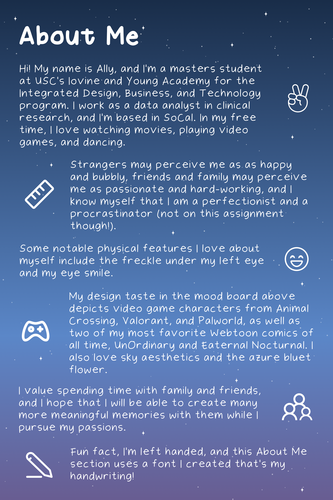

Overview
My avatar design is the first self-portrait I created in Figma using the pen tool and gradients.
Moodboard
To start this creative project, I assembled this mood board of what I wanted to take inspiration from in the creation of my avatar. I collected images from some of my favorite video games Valorant, Palworld, and Animal Crossing, as well as some of my favorite web comics unOrdinary and Eaternal Nocturnal. I also included sky pictures for the aesthetic, and the image that my azure bluet logo is based on.

Process
I started with my hair with a gradient from black to dark brown, and then I did the rest of the body and face. I debated where to align the gradient for the dress as well, and I went with what looked best to me.




My Avatar and About Me
Here is the final product!


Reflection
I am so grateful to have the opportunity to express my creativity on an assignment like this one. Being able to combine my love for the video game Animal Crossing and my UI/UX design skills I learned in my UX Design class in this hotel accommodations app made this an incredibly fun project.